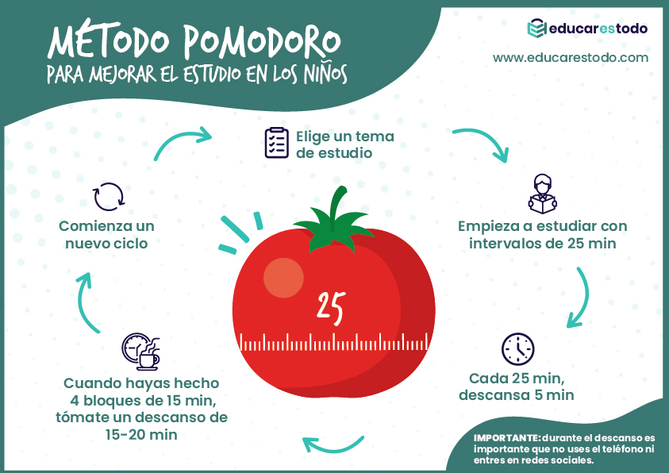

Con el proyectoo MET, ampliarás todo tu conocimiento mediante el uso perfeccionado que ha sido elaborado por nuestros profesionales. Todas las actividades, ideas, ... han sido analizadas y elaboradas en varios estudiantes de distintas instituciones para poder probar y afirmar su utilidad en el ámbito académio.
Aqui te traemos enlaces a las mejores tecnicas de estudio:
